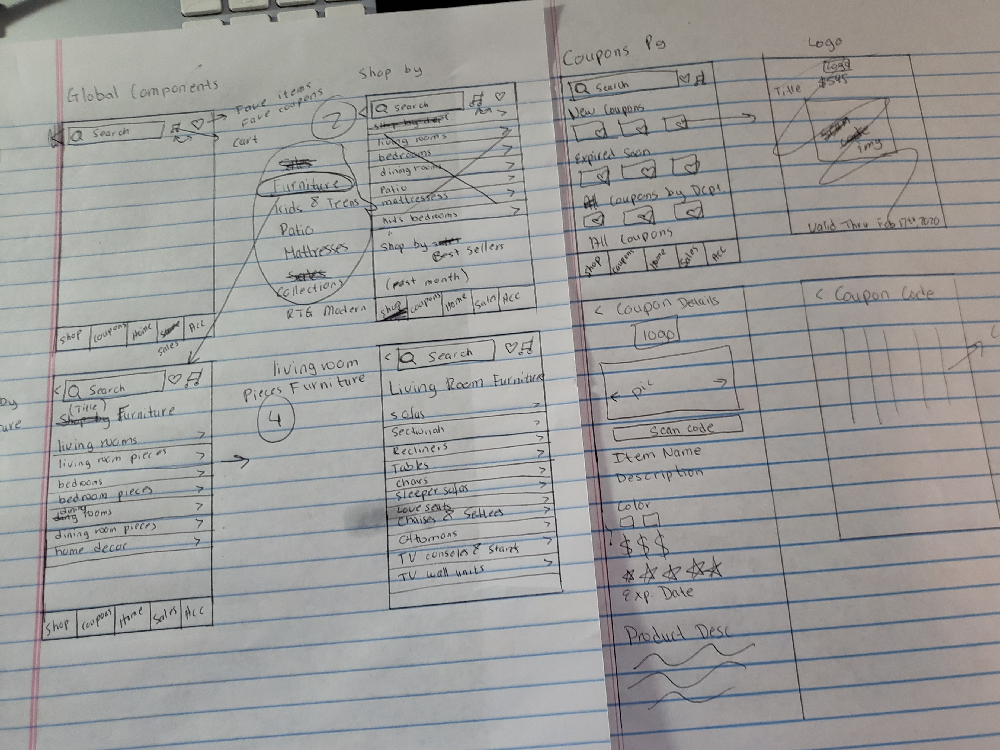
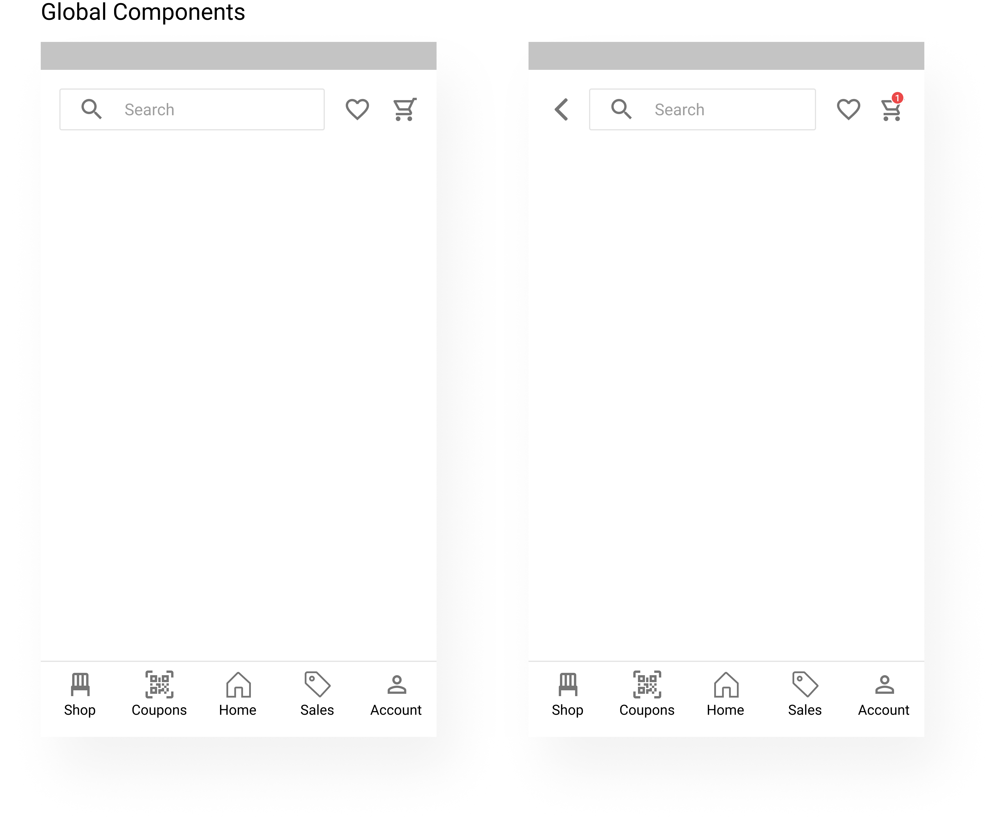
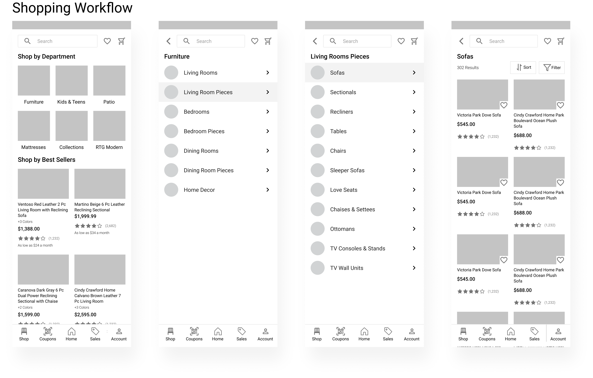
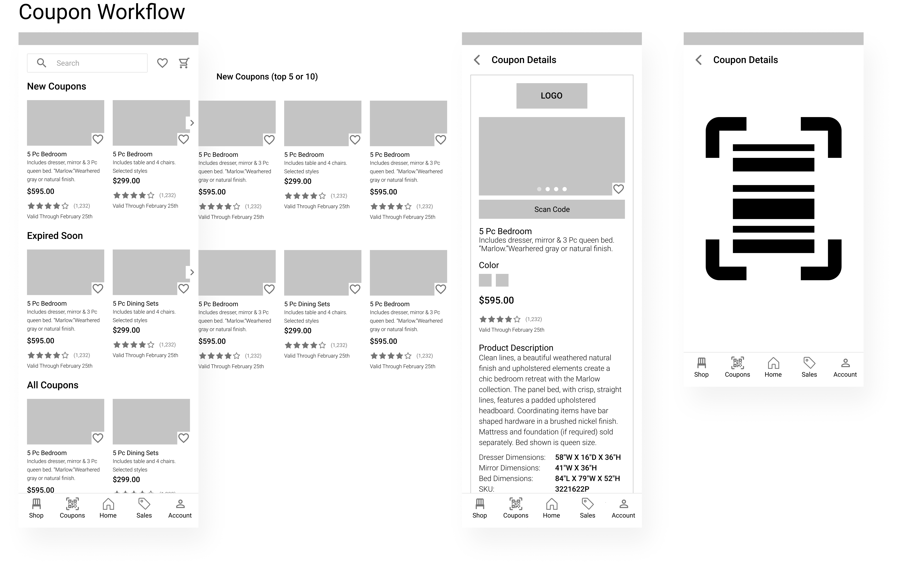
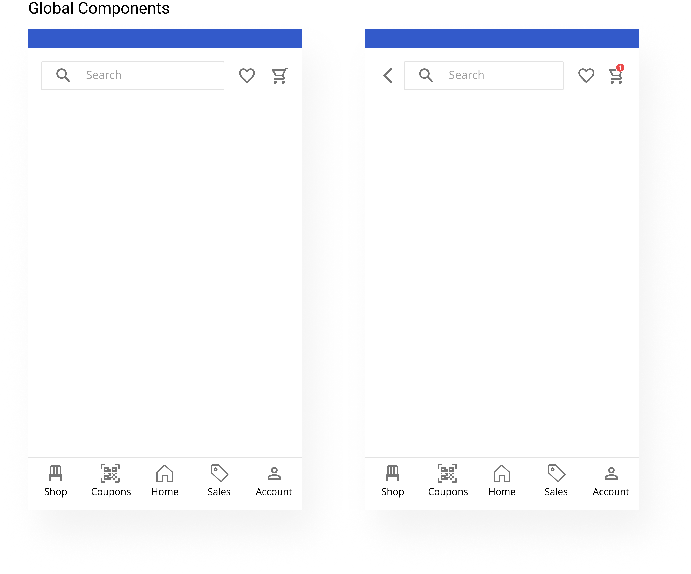
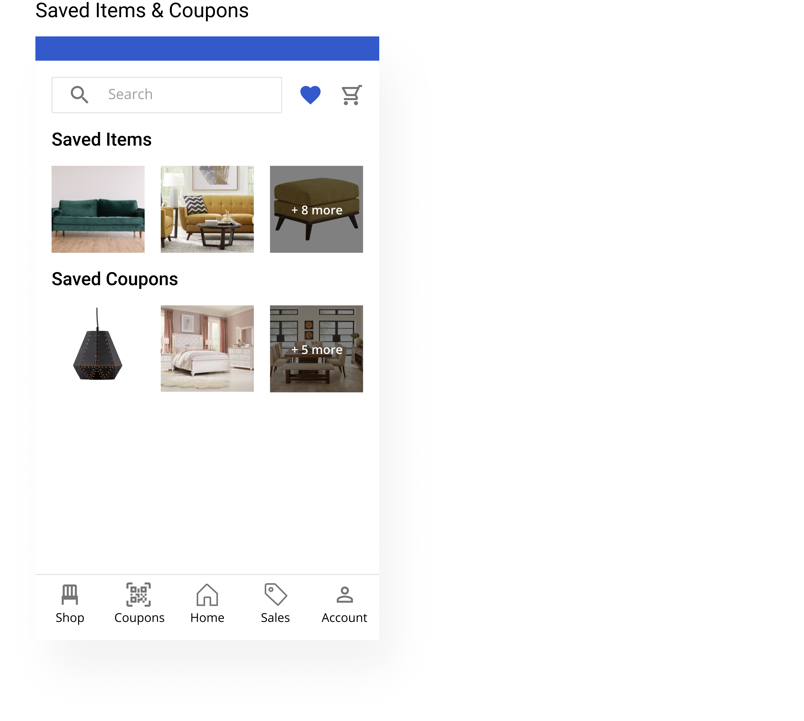

Hi There!
I had a pleasant time learning about Rooms To Go and your company's future plan for the UX division. During our conversation, Denise mentioned some problems with the Rooms To Go current mobile app. I decided to check it out and dissect it further to provide an improved user experience based on the reviews on Google Play and competitive analysis. I'm very excited and would love to discuss this in person on how we can take this further.
DISCLAIMER: The improved version suggestions do not take into account of Rooms To Go's business strategy and may change should there be access to the business internal data analysis and business goals.
PROCESS
1. DISCOVERY & RESEARCH
User research: I started the process with the user research, reading comments from the Google Play store and App Store. Here are some of my findings:
- Most options link to website
- Slow to load
- Search option has no filter and sort by options
- The word coupons and sales used interchangeable. When click on coupons, it links customer to sale items.
- Coupon page is hard to navigate
- Mobile app send sales notification but takes customers to the home page options (Where is the item that is on sale?)
Problems
Competitive analysis: I narrowed down to three competitors (Wayfair, Ashley Homestore, and Joybird), analyzed their site maps, and how they played to their strength. For example, Wayfair has abundant products but has constant sales. Most of their mobile pages feature sale items. Ashley Homestore, on the other hand, has fewer products, but their app is very easy to navigate. It is simple, easy to find items, and scannable. Joybird is specifically known for catering to pet owners and family lifestyle with easy to clean collections.

- Create a mobile enveronment that is website independent
- Create a global nagvigation menu for the mobile app
- Create a search experience with filter and sort by options, along with saving favorite items and cart
- Create coupon pages with specific code so customers can scan in-store for credit
- Allow customers to save coupons
Goal
- It seems like the app started off as a coupon platform but now wants to turn it to a shopping platform
- Assuming coupons is different from sales. Coupons provide a code to scan in store for credit
- Only redesigning pages that address the customer's concerns such as the search page, coupon page, and navigation options.
Assumptions
2. DESIGN
Sketches: After the research. I decided to focus on 4 main workflows that will help with the user problems. A global component screen to show the apps' flexibility and to pull away from the website. A "Favorite" screen where users can save items and coupons. A shopping workflow to show the "filter" and "sort" options for search results. Lastly, a coupon workflow to quickly navigate to coupons and provide the ability to scan the code in-store.
Low fidelity wireframes: I took the sketches and refined it further to low fidelity wireframes. This includes the contents to be included, spacing, or any imagery.
  High fidelity wireframes: In this process, I utilized Rooms To Go's brand colors and typography.
 

3. FEEDBACK & ITERATIONS:
In this next step, I'd love to hear your thoughts. I want to verify assumptions and this design concept with data. I would then perform usability tests, then iterate more based on feedback and results. If given more time, I would expand further to create more workflows, expending the design process for the "Home", "Sales", and "Account" screens.